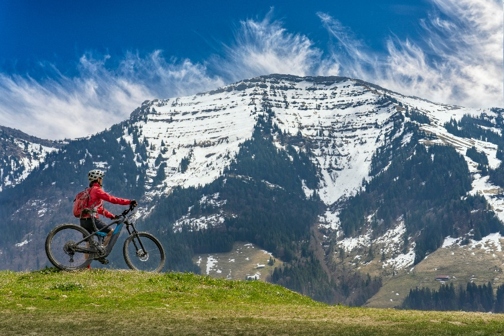
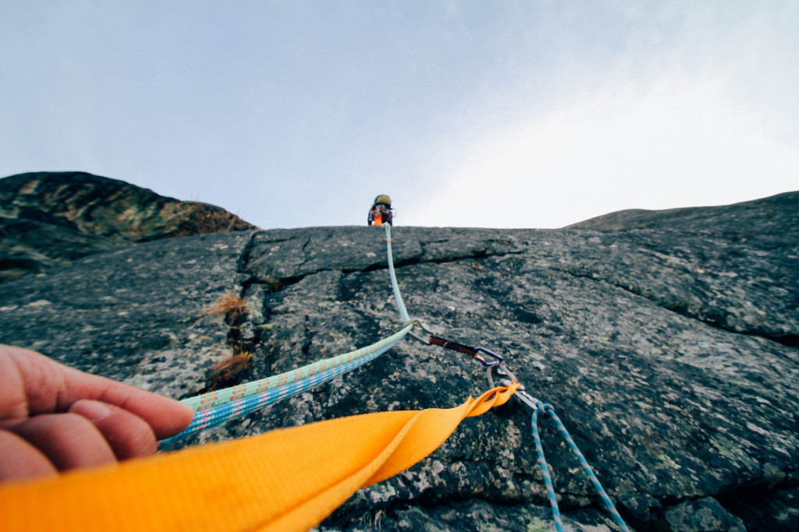

¡Bienvenido a nuestra asociación dedicada a la pasión por la montaña en Rivas Vaciamadrid! Somos un grupo apasionado de amantes de la aventura y la naturaleza que se ha unido para compartir experiencias únicas y emocionantes.
Nuestra Misión
En nuestra asociación, nos esforzamos por fomentar la conexión con la naturaleza y promover un estilo de vida activo y saludable. Nos enorgullece ofrecer una variedad de actividades de montaña para todas las edades y niveles de habilidad.
Actividades destacadas
Escalada
Experimenta la emoción de desafiar alturas y superar obstáculos en nuestras emocionantes sesiones de escalada. Ya seas principiante o experto, nuestras actividades están diseñadas para adaptarse a todos los niveles.
Alpinismo
Embárcate en emocionantes aventuras alpinas mientras exploras las majestuosas montañas que rodean Rivas Vaciamadrid. Nuestros guías expertos te llevarán a lugares increíbles.
Senderismo
Descubre la belleza natural de Rivas Vaciamadrid a través de nuestras rutas de senderismo cuidadosamente seleccionadas. Desde caminatas relajadas hasta desafíos más intensos, hay algo para todos.
Mountain bike
Si eres un entusiasta de las dos ruedas, únete a nuestras rutas de mountain bike y explora senderos panorámicos y emocionantes descensos.
Vías Ferratas
Atrévete con nuestras rutas de vía ferrata y experimenta la mezcla perfecta de escalada y senderismo. ¡Una experiencia inolvidable!
Nuestros valores
En RivasRocks, nos esforzamos por ofrecer experiencias de montaña de la más alta calidad. Nuestros guías expertos están dedicados a brindarle una experiencia segura y agradable.
Nuestros valores fundamentales son:
- Seguridad
- Calidad
- Respeto
- Compromiso
- Responsabilidad
Compromiso con la seguridad
La seguridad de nuestros participantes es nuestra máxima prioridad. Contamos con guías certificados y seguimos estrictos estándares de seguridad en todas nuestras actividades.
